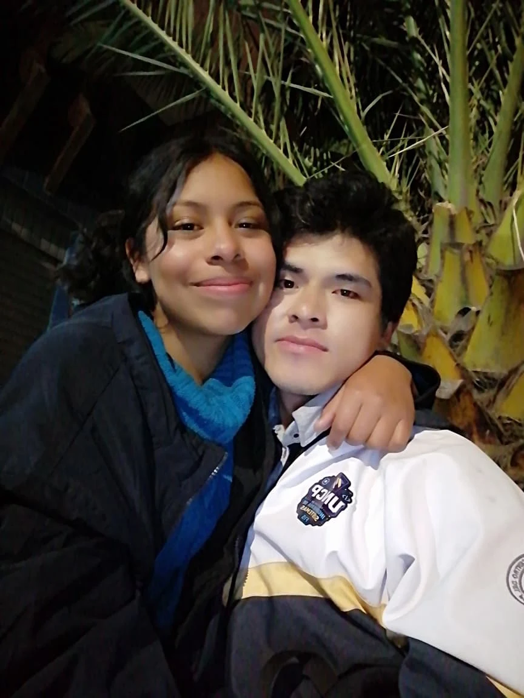
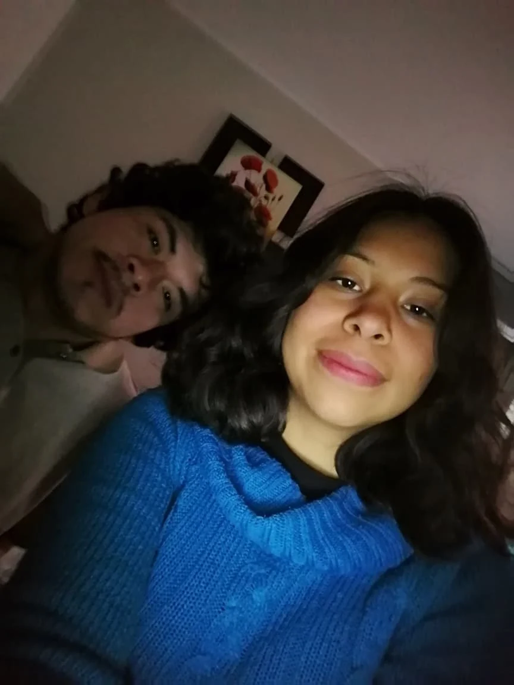
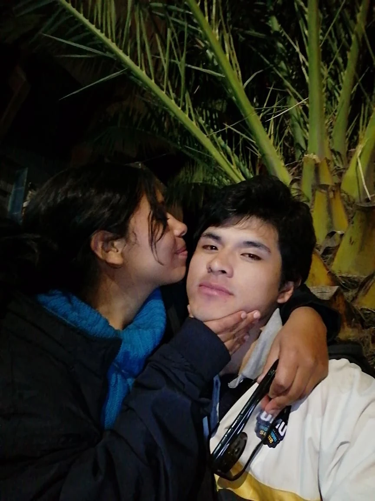

una pequeña historia
Todo empezó de una forma sencilla.
Una fiesta por amigos en común. Después, conversaciones de la vida. Y de pronto, esa sensación bonita de que con alguien todo se entiende un poquito más fácil.
— Edison
para Mafer
Quise dejarte un lugar al que puedas volver cuando quieras.
con cariño, Edison
un jardín para Mafer
Tal vez no podía darte el jardín más grande, pero sí podía hacerte uno que no se marchite.

una pequeña historia
Una fiesta por amigos en común. Después, conversaciones de la vida. Y de pronto, esa sensación bonita de que con alguien todo se entiende un poquito más fácil.
— Edison
ojitos lindos
Bueno… en realidad son muchas cosas. Pero tu mirada fue la primera pista.
nuestro comienzo

mai
Y terminan ocupando muchísimo espacio dentro de uno.
Esta parte no necesita explicar más.
fotografías que se quedan
Pero son nuestras. Tócalas para mirarlas de cerca.
un jardín que crece
¿Me ayudas? Cada flor guarda una razón pequeña para celebrar que existes.
Aún hay espacio para una flor.
un secreto pequeño
No todo tiene que hacer sentido para ser especial.
cosas oficiales de nosotros
una explicación en un idioma que entiendo
const mafer = {
nombre: "Maria Fernanda",
apodo: "Mafi",
primeraPista: "su mirada",
importancia: Infinity
};
const nosotros = {
inicio: "una fiesta",
energia: "2 loquitos",
estado: "todavía escribiéndose"
};
while (nosotros) {
crearRecuerdos();
}cuando me extrañes
Hay un mensaje esperando para ti.
para abrir despacio
nuestra canción
Tú. Yo. Y todos esos momentos que solamente nosotros entendemos.
Si algún día escuchas esta canción, quiero que sepas que hay un jardín encendido para ti, incluso cuando yo no esté contigo.

una última cosa
Pero podía hacerte un lugar donde no se marchitan.
Feliz día de las flores amarillas, Mafer.
Para mi Mafi. — Edison